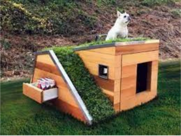
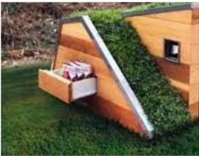

Selecione as partes em vermelho para obter informações!
Telhado
O telhado possui uma área verde, com uma plantação de milho, que traz muitos benefícios para seu pet.
Rampa
Para que seu bichinho acesse o telhado, a casa possuí uma rampa antiderrapante.
Material
Esse produto é feito com materiais reciclados, como madeira e papelão, feito com todo carinho para seu pet, prezamos por ajudar a manter a vida do seu pet mais saudável e protegida.